"L'informatique, ça fait gagner beaucoup de temps... à condition d'en avoir beaucoup devant soi !" - Donc si vous voulez gagner du temps à utiliser un ordinateur, passez du temps sur ce site !
SOMMAIRE
BASES
MAIL
INTERNET
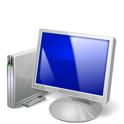
Ouvrir la bibliothèque
Aller sur une boîte Gmail
Effectuer une recherche avec Google
Changer le fond d'écran
Créer une adresse mail
Mettre en favoris
Supprimer un élèment
Augmenter le son
Compétences
Acquis
Être capable d'accéder à la Bibliothèque
Savoir changer le fond d'écran
Prendre la décision de supprimer un élément sans avoir peur
Pouvoir augmenter le son
Accéder à sa boîte Gmail
Pouvoir écrire un mail
Savoir envoyer un mail
Être capable de créer une adresse mail
Savoir surfer sur le web avec Google
Pouvoir mettre en favoris vos sites préférés
Ouvrir la Bibliothèque
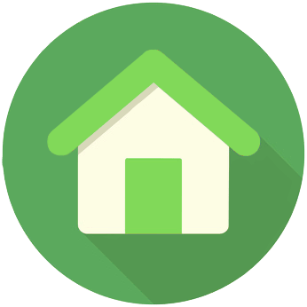
A quoi sert la Bibliothèque ?
Nous allons apprendre à ouvrir la Bibliothèque. La Bibliothèque regroupe tous les dossiers que vous avez créés vous-même ou ceux existant déjà par défaut lors du premier démarrage de votre ordinateur. Selon le type de dossier choisi, il existe plusieurs types de documents qui y sont enregistrés. Par exemple dans le dossier Musique, sont enregistrés des fichiers audios.
Comment y accéder ?
1ère étape:
Il faut commencer par chercher l'icône qui correspond à la bibliothèque. Il se trouve dans la barre de tâches: c'est-à-dire la barre horizontale en bas de votre écran. La bibliothèque est représentée par un icône comme celui-ci: 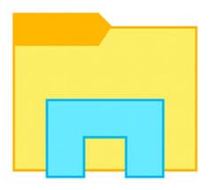
2ème étape:
Une fois trouvé, il ne vous restera plus qu'à cliquer une fois dessus et une fenêtre affichant tous les dossiers apparaîtra.
Voici un résumé en vidéo:
Consignes de l'exercice:
Voici un petit exercice pour savoir repérer l'emplacement des dossiers. Pour cela, pourquoi pas chercher où se trouvent les photos prises lors de votre week-end passé avec les petits-enfants ? Pour vous aider, ces photos ont été enregistrées dans le dossier Images. A vous de le retrouver ci-dessous, en tenant compte des indications et de la vidéo présentés ci-dessus! Bonne chance! ☺
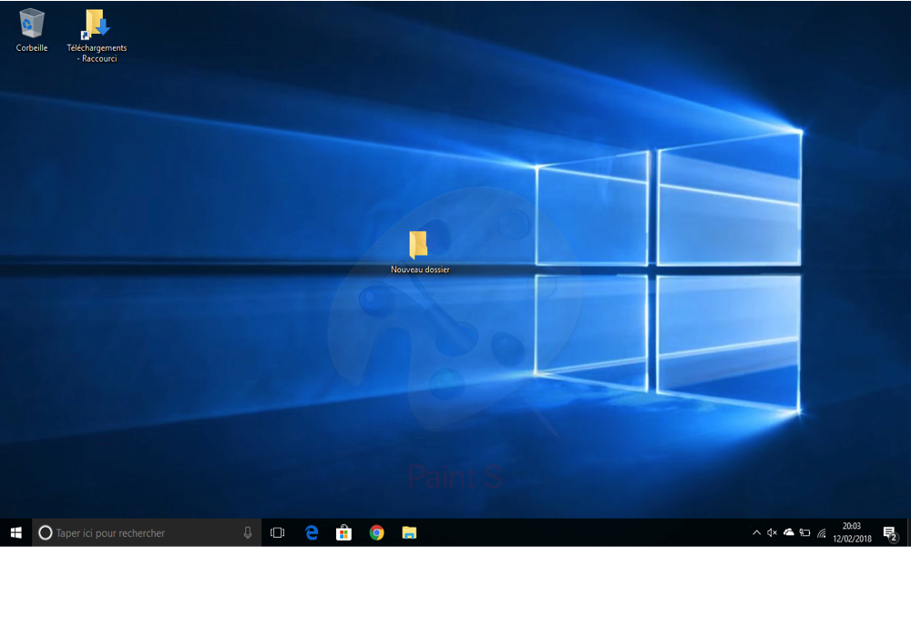
Changer votre fond d'écran
Qu'est-ce que le fond d'écran ?
L'arrière plan de votre page d'accueil ou fond d'écran, est personnalisable et permet de rendre plus agréable le temps passé sur le Bureau. Vous pouvez prendre une image que vous avez enregistrée dans la bibliothèque (voir tutoriel: comment accéder à la bibliothèque) pour la définir en tant que fond d'écran, ou bien vous pouvez choisir les fonds d'écrans installés par défaut sur votre ordinateur.
Comment changer le fond d'écran ?
1ère étape:
Commencez par cliquer sur le symbole qui se situe en bas à gauche de votre écran. Il renvoie à l'accueil : 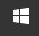
2ème étape:
Puis allez dans les paramètres grâce à ce bouton ci qui se trouve en bas à gauche de votre écran, et au-dessus du symbole accueil :
3ème étape:
Apparaît alors la fenêtre des paramètres. Une fois apparue, cliquez sur l'onglet Personnalisation comme représenté ici :
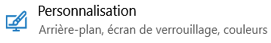
4ème étape:
Le contenu du menu Personnalisation déroule alors, cliquez maintenant sur l'onglet Arrière-plan :
5ème étape:
Enfin, se présentent à vous plusieurs possibilités: soit vous choisissez parmi les 5 fonds d'écrans installés par défaut, soit vous allez dans Parcourir pour aller rechercher des photos personnelles.
Voici un résumé en vidéo:
Consignes de l'exercice:
Voici un petit exercice pour changer le fond d'écran d'un ordinateur. Pour cela, pourquoi pas définir un fond d'écran doux ? Je vous propose de définir le fond d'écran de cet ordinateur par l'image représentant une tente verte installée à la pleine étoile, en tenant compte des indications et de la vidéo présentés ci-dessus. Pour vous aider, ce fond d'écran se trouve directement parmi les 5 arrières-plans (ou fonds d'écrans) installés par défaut. Bonne chance! ☺
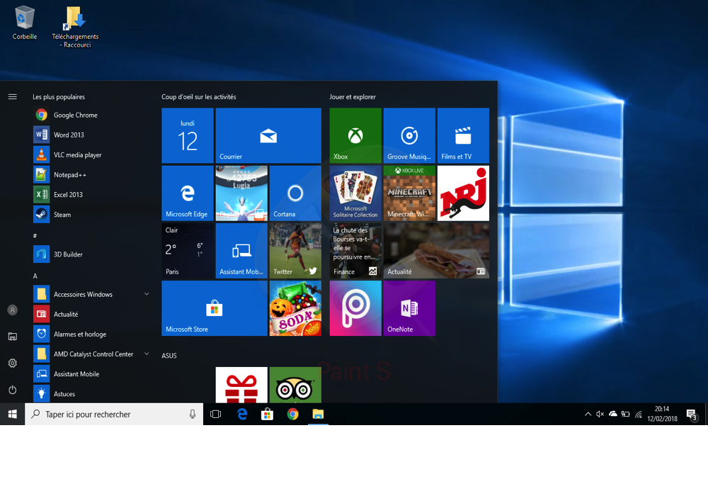
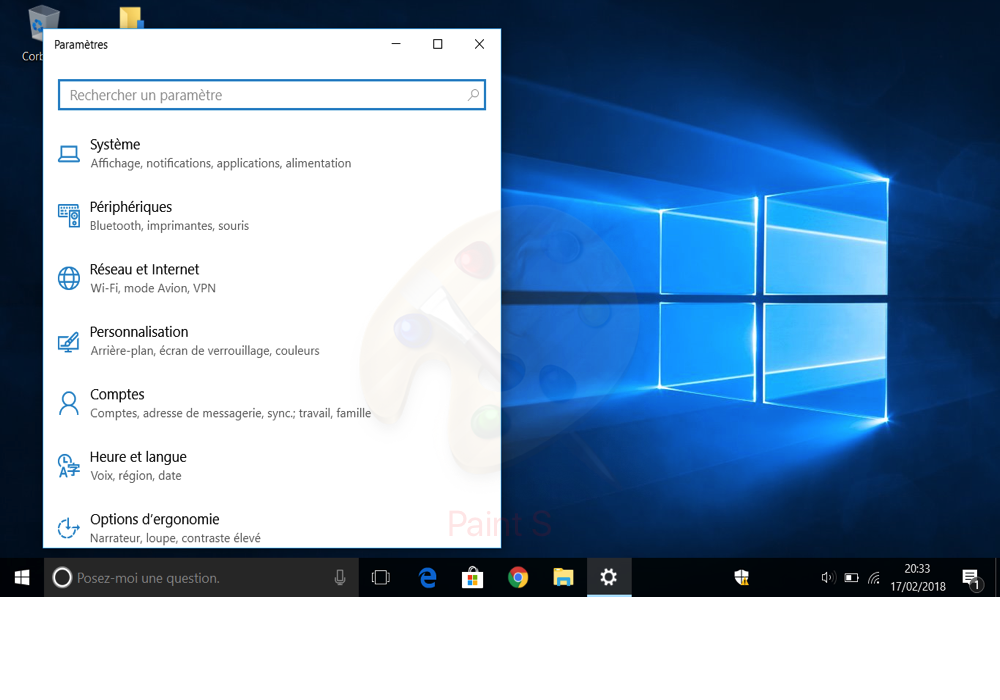
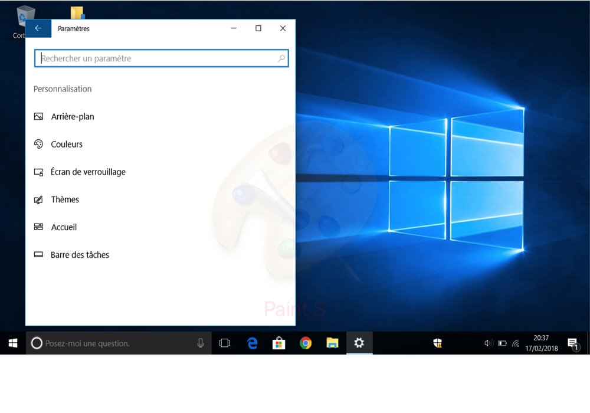
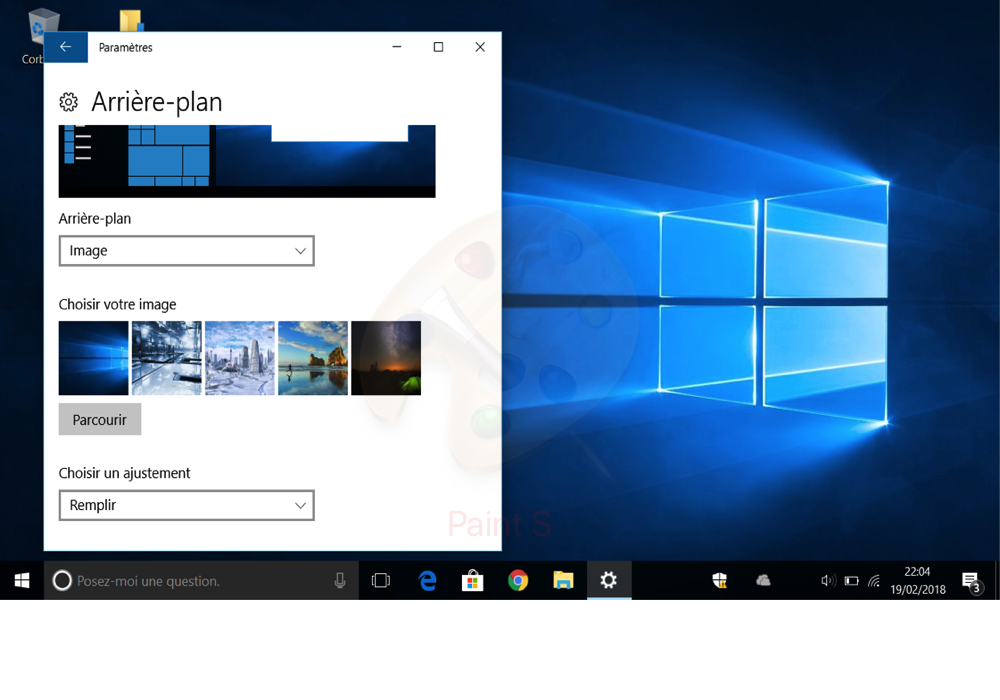
Supprimer un élément
Pourquoi supprimer un élément ?
Si l'on veut supprimer un élèment ou fichier, cela signifie que ce fichier provient de la bibliothèque (voir tutoriel: afficher la bibliothèque). Par exemple, vous voulez "gagner" de l'espace de stockage sur votre ordinateur, et que vous avez des fichiers dont vous n'en trouvez plus l'utilité, il faut alors supprimer ce fichier.
Comment supprimer un élèment ?
1ère étape:
Ouvrez la bibliothèque et allez chercher le fichier que vous voulez supprimer. Pour rappel, l'icône de la bibliothèque est celui-ci:
2ème étape:
Puis cliquez sur le dossier dans lequel est enregistré votre fichier ou photo.
3ème étape:
Ensuite appuyez sur la partie droite de votre souris (c'est ce qui s'appelle faire un clique droit). Effectuez le en vous positionnant sur le fichier à supprimer. La fenêtre du clique droit est comme ci-contre. Une fois affichée, cliquez sur Supprimer:
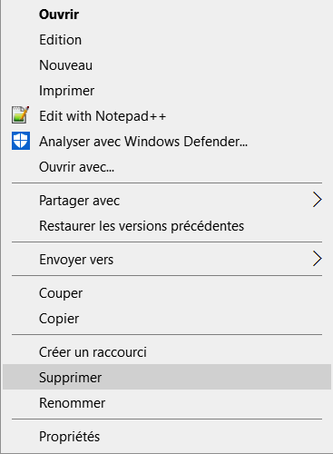
4ème étape:
Enfin, il faut vider la corbeille, c'est-à-dire l'endroit dans lequel tous les fichiers "supprimés" seront stockés. Et oui, quand vous supprimez un fichier il ne l'est pas définitivement: il ne l'est qu'une fois la corbeille vidée. Pour cela, effectuez un clique droit en vous positionnant sur la corbeille située sur le Bureau, et cliquez sur Vider la corbeille comme ci-dessous:
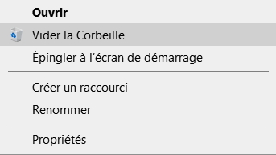
Voici un résumé en vidéo:
Consignes de l'exercice:
Maintenant que vous avez un ordinateur et un téléphone portable, le document que vous avez rédigé faisant office de comparatif de portables ne vous sert plus à rien. Pourquoi pas le supprimer en tenant compte des indications et de la vidéo présentés ci-dessus? Pour vous aider, ce fichier se trouve dans le dossier Documents. Bonne chance ! ☺
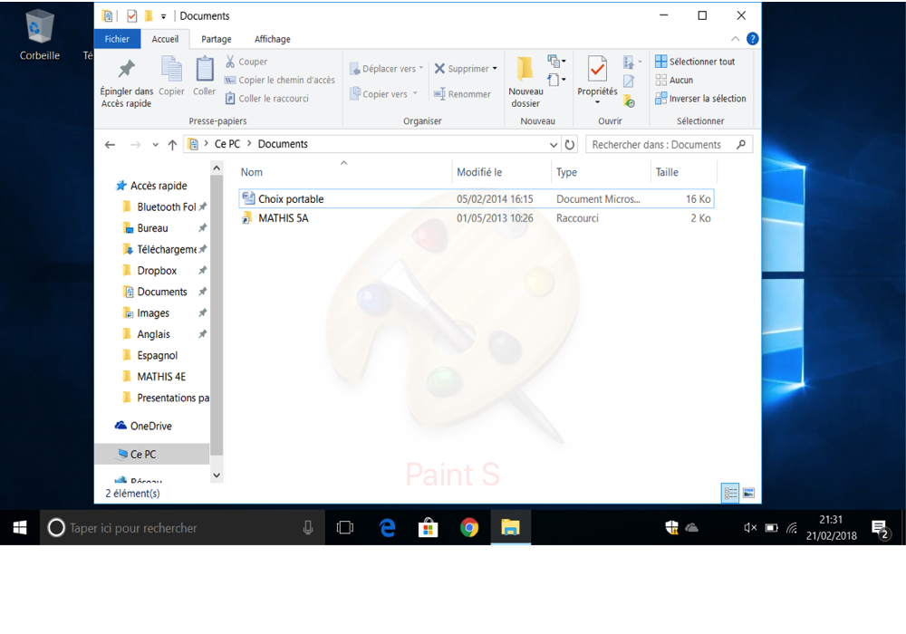
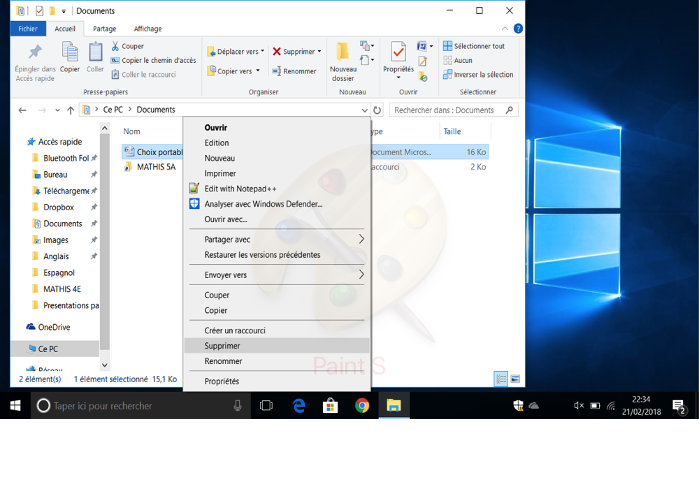
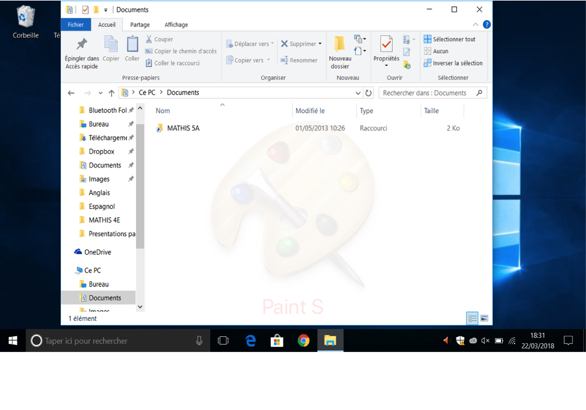
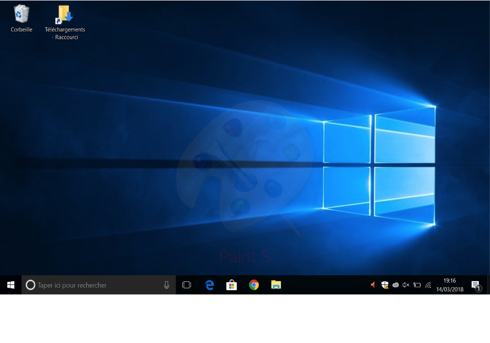
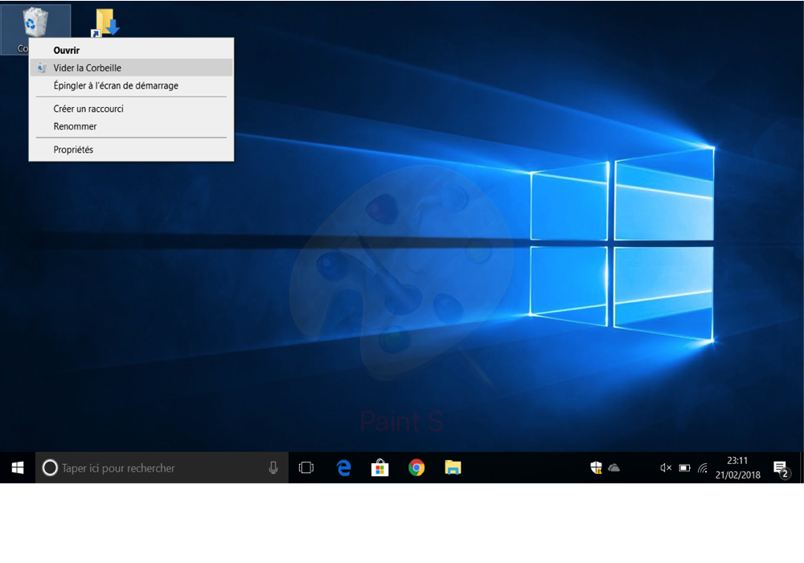
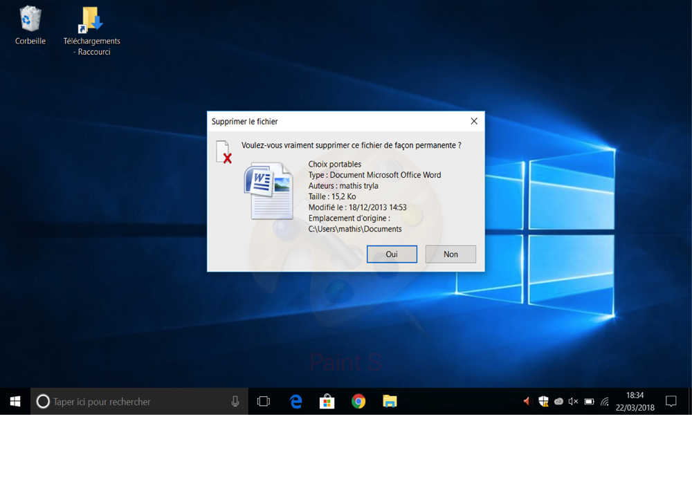
Augmenter le Son
Comment augmenter le son ?
1ère étape:
Tout d'abord, commencez par chercher cet icône du son qui se situe en bas à droite de votre écran dans la barre des tâches:
2ème étape:
Une fois trouvé, analysez la situation. S'il y a une croix à côté de cet icône présenté ci-dessus, cela signifie que le son est coupé. Sinon, si cette croix n'est pas affichée cela signifie que votre son est activé selon un certain volume.
3ème étape:
Enfin, pour règler le volume comme vous le voulez, maintenez la touche fn et celle qui correspond au volume sur votre clavier.
Voici un résumé en vidéo:
Naviguer dans une boîte Gmail
Comment rechercher Gmail sur Internet ?
1ère étape:
En effet, comme vous avez pu le voir avec le titre, pour accéder à sa boîte mail il faut effectuer une recherche sur Internet en utilisant un moteur de recherche. Un moteur de recherche ou navigateur vous permet d'aller sur Internet pour effectuer une quelconque recherche. Il existe plusieurs navigateurs. Leurs logos auquels on les associe vous sont affichés pour les plus connus ci-dessous :
Le premier correspond à Mozilla Firefox, le second Google Chrome, et le troisième Microsoft Edge. Cliquez donc sur un de ces navigateurs.
2ème étape:
Tous les mails sont accessibles via des messageries dont la plus connue est Gmail. La barre de recherche qui va s'afficher au centre de l'écran, est l'endroit où il faut taper les recherches que l'on veut effectuer. Cliquez sur cette barre puis taper grâce à votre clavier "gmail".
Voici un résumé en vidéo:
Comment écrire des mails ?
1ère étape:
Pour commencer à écrire un mail, il faut d'abord être connecté à son compte Gmail (comme expliqué précédemment). Puis cliquez sur NOUVEAU MESSAGE: cela est écrit en blanc dans un cadre rouge sur Gmail comme ci-contre: 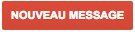
2ème étape:
Une fenêtre va alors s'afficher en bas à droite de votre écran comme celle-là:
Trois zones sont alors délimitées dans cette fenêtre: la première dans laquelle il faut rentrer le destinataire du mail. La deuxième est facultative et permet d'entrer un objet au mail. Enfin la troisième la plus grande est la zone dans laquelle le contenu du mail va être écrit.
3ème étape:
La case du destinataire et celle du contenu du mail sont obligatoirement écrites. Une fois ces deux cases remplies, appuyez sur la case en bleue ENVOYER.
Où consulter ses mails ?
Une fois connecté(e) à votre compte Gmail, vous verrez apparaître la rubrique Boîte de réception sur la gauche de votre écran: c'est dans cette rubrique que sont enregistrés les mails que vous avez reçus. Cliquez donc sur cette rubrique pour pouvoir consulter vos mails.
Remarque: lorsque vos mails sont encadrés en blanc c'est que vous n'avez pas encore lu ce mail. En revanche s'ils sont encadrés en gris c'est que vous avez déja consulté le mail.
Comment organiser ses mails ?
Pour organiser vos mails, vous pouvez les trier selon leur contenu. Trois onglets thématiques sont prédéfinis sur Gmail: Principale, Réseaux Sociaux et Promotions. Par exemple, pour déplacer un mail vers l'onglet Réseaux sociaux, vous devez faire un clique droit sur le mail que vous voulez déplacer. Puis cliquez sur Déplacer vers l'onglet: les onglets Réseaux Sociaux et Promotions s'afficheront. Il ne vous restera plus qu'à cliquer sur l'un des deux onglets comme ci-contre:
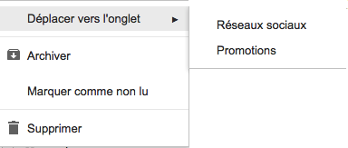
Voici un résumé en vidéo:
Consignes de l'exercice:
Vous venez de créer votre compte Gmail, et vous venez de recevoir un mail de confirmation de la part de Gmail. Vous désirez le classer dans un onglet et vous considérez qu'il doit être "rangé" dans l'onglet Réseaux sociaux. A vous de trouver cet onglet pour pouvoir y placer le mail de Gmail, en tenant compte des indications et de la vidéo présentés ci-dessus. Bonne chance ! ☺
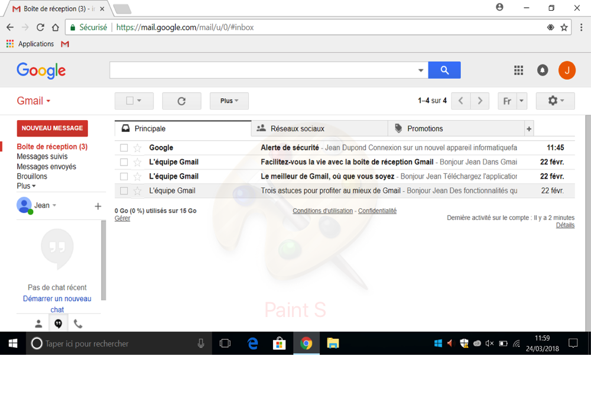
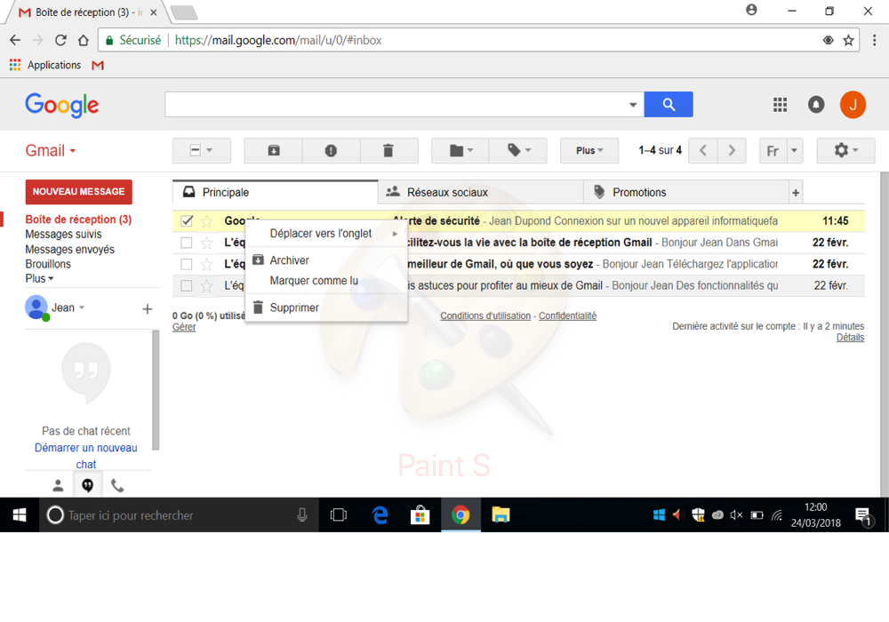
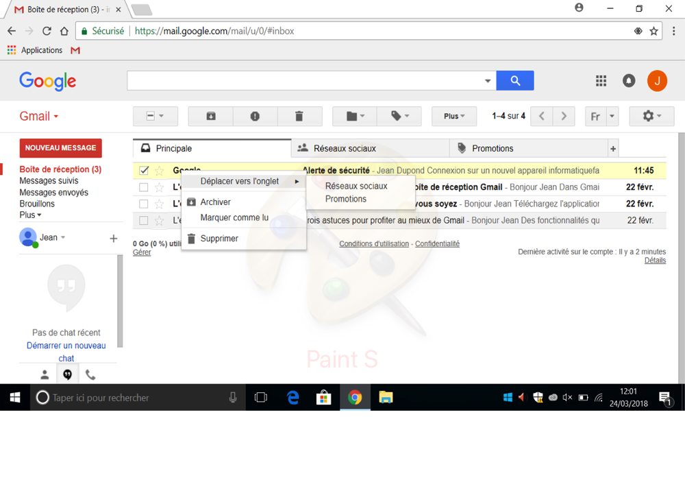
Créer une adresse mail
Comment créer une adresse mail ?
Avant d'accéder à ses mails, il faut posséder une adresse mail. Celle-ci, sous gmail, va se terminer par @gmail.com C'est pour cela qu'après avoir cliqué sur la première réponse de recherche associée à "gmail", une page contenant un formulaire d'inscription sera affiché pour que vous crééiez votre adresse mail. Une fois le formulaire rempli, votre adresse sera créée. Vous aurez à remplir un formulaire comme ci-dessous :
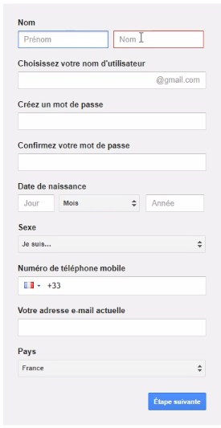
Voici un résumé en vidéo:
Effectuer une recherche avec Google
A quoi sert la recherche Google?
Google est essentiel pour pouvoir trouver des informations, mais pour cela il faut savoir utiliser l'outil google.
Comment faire des recherches sur google?
1ère étape:
Il faut tout d'abord aller sur votre nagivateur internet. Pour cela appuyer sur le logo Google chromecomme ceci:
2ème étape:
Une fois la page internet lancer, cliquer sur la barre de recherche et écrivez Gmail, puis cliquez sur rechercher.
Plusieurs liens s'afficherons, cliquez sur l'un d'entre eux pour accéder au site que vous voulez.
Voici un résumé en vidéo:
Consignes de l'exercice:
Vous désirez consulter vos mails car vous venez de recevoir un mail important: problème vous ne savez pas comment accéder à votre boîte mail. Je vous propose de résoudre ce problème en accédant à votre moteur de recherche afin de taper Gmail et cliquer sur la première recherche que l'on vous propose; tout en tenant compte des indications et de la vidéo présentés ci-dessus. Bonne chance ! ☺
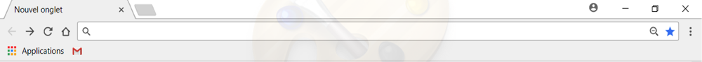
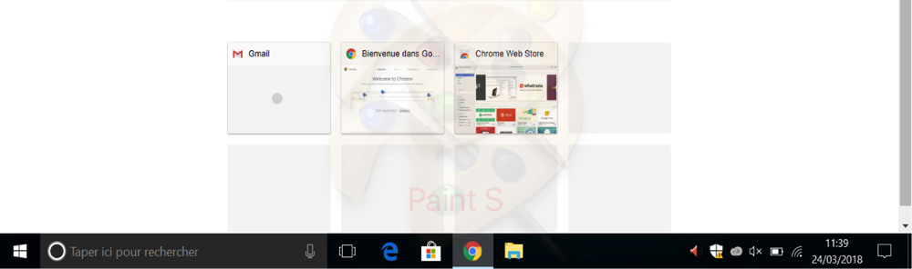
Mettre en Favoris
Comment mettre en favoris ?
1ère étape:
Tout d'abord cherchez l'icône de votre navigateur internet, puis cliquez dessus afin de l'ouvrir. Nous prendrons Google Chrome pour l'exercice. Son icône est la suivante:
2ème étape:
Cherchez votre page internet que vous voudrez mettre en favoris. Faites la recherche à l'aide de votre barre de recherche. Tapez votre recherche grâce à votre clavier. Cette barre est comme ci-contre:
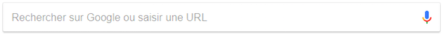
3ème étape:
Une fois votre page trouvée, dirigez vous vers la droite en haut de la page puis cherchez une icône en forme d'étoile puis cliquez dessus. Cette icône est comme ci-contre: Et voilà votre page internet est mise en favoris.
Consignes de l'exercice:
Vous désirez garder en mémoire un site de cuisine qui rassemble toutes les recettes possibles et imaginables: Marmiton. Pour cela, vous allez devoir mettre en favoris ce site, en tenant compte des indications et de la vidéo présentés ci-dessus. Vous commencez cet exercice en considérant que vous ayez déja tapé et recherché Marmiton sur Google. Si vous ne vous souvenez plus comment faire cliquez ici. Bonne chance ! ☺


 Et voilà votre page internet est mise en favoris.
Et voilà votre page internet est mise en favoris.